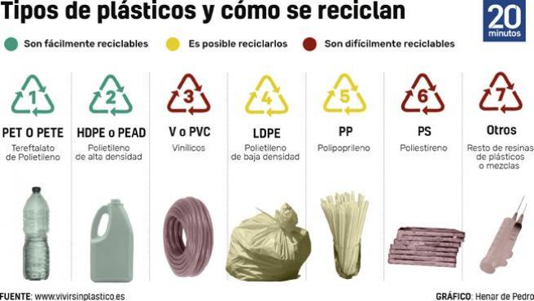
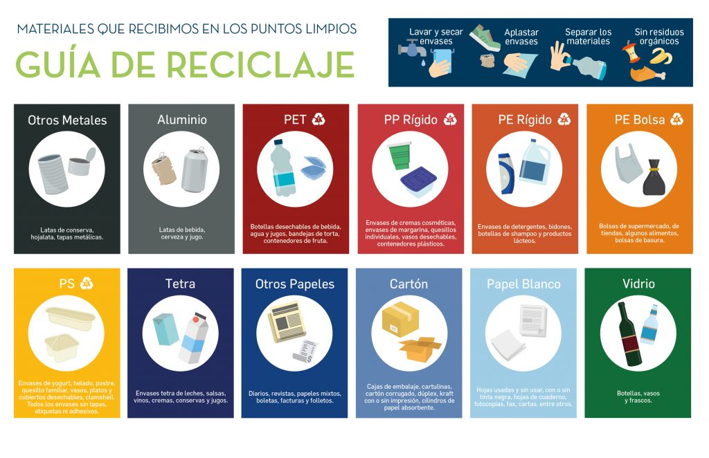
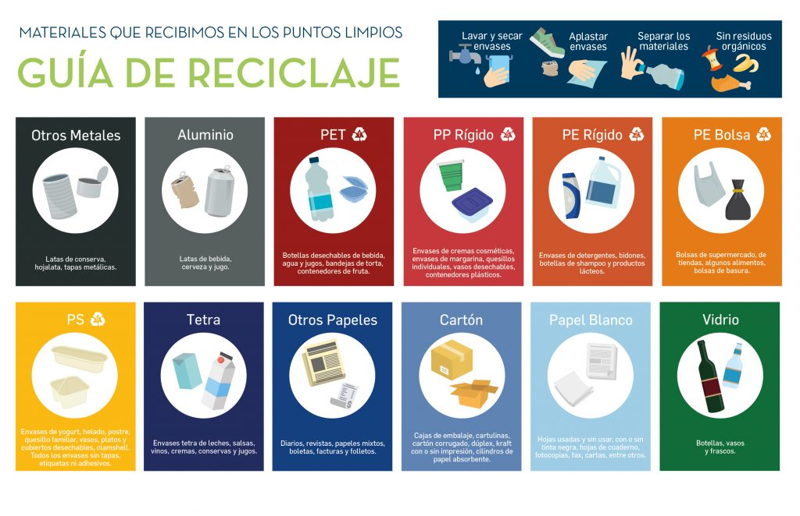

Cada botella tiene un dibujo el cual nos indica que tipo de plastico es y si lo podemos reciclar
No todos los plasticos pueden reciclarse por ejemplo Los plásticos biodegradables que proceden de fibras vegetales no se reciclan, pero sí se pueden utilizar para obtener compost.
A continuacion te dejamos una guia para saber que plasticos puedes reciclar y obtener beneficios al mismo tiempo
 


ademas te dejamos un articulo para mas informacion